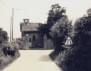
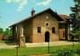
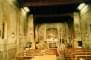

| |

anno 1978
vista dal borgo

anno 1978
panoramica
anno 1980
lato sud, casa del
cappellano e strada per
cascina Carlotta/Rocca
Brivio

anno 1986
ingresso dal borgo con
il monumento ai caduti
svizzeri

anno 1993
panoramica dell'interno
|
 |
|
Giovannolo de Brivio, testando l'11 settembre 1386 con rogito Ambrogio dei Trincheris, fra gli altri lasciti legava ai poveri di Zivido tre moggia di pane di frumento e uno staio di sale da distribuirsi ogni anno e ordinava che a Zivido fosse celebrato il septuagesimo ed il trigesimo della sua morte. E' questo il primo documento da cui risulta che a Zivido esistesse una chiesetta e che fosse ufficiata. Certamente essa doveva essere a disposizione di Giovannolo Brivio.
Difficile � stabilire se era nello stesso luogo dove più tardi il Magnifico Giacomo Stefano Brivio erede superstite di Giovannolo costru� quella che ancor oggi si vede.
Giacomo Stefano test� il 28 agosto 1483 con rogito Filippo Brena legando annue 4 lire imperiali al cappellano della Chiesa di S. Maria di Zivido fatta costruire dal testatore, affinch� vi celebrasse Messe ed uffici. Poich� Giacomo Stefano entr� in maggiore et� nel 1448 la data di costruzione della chiesetta � necessariamente compresa fra il 1448 e il 1483.
Il Magnifico Alessandro Brivio capitano ducale, figlio ed erede di Giacomo Stefano pei beni di Zivido test� il 7 agosto 1506, con rogito Stefano de Saronno, legando un capitale di 200 ducati a 4 lire imperiali l'uno per l'acquisto, entro tre anni dalla sua morte, di una propriet� il cui reddito fosse devoluto al cappellano della Chiesa di S. Maria di Zivido fatta fabbricare dal suo genitore obbligandolo a celebrarvi la Messa tutte le domeniche e gli altri giorni festivi e nel caso in cui non vi fossero festivit� durante la settimana si dovr� celebrare una Messa il mercoledì o il venerdì. La nomina del cappellano spetter� al primogenito della sua discendenza ed in caso di estinzione del ramo suo maschile, il maschio prossimo. In questo legato sono compresi quelli stabiliti dal genitore Giacomo Stefano.
Il Magnifico Cavaliere Carlo Brivio figlio ed erede di Alessandro test� il 16 giugno 1553 con rogito Ludovico Varese. Egli obblig� il suo erede Alessandro nipote ex patre ad istituire una Messa quotidiana che dovr� celebrarsi nell'oratorio di S.Maria di Zivido corrispondendo al cappellano 80 lire imperiali all'anno, comprendendo in questo legato quelli dei suoi antecessori. Risulta inoltre che Carlo fece fare dal Borgognone (Ambrogio da Fossano) un trittico rappresentante la Beata Vergine col Bambino con ai lati dalla parte del Vangelo S.Ambrogio con sotto l'arme Brivio e dalla parte dell'Epistola S.Caterina con sotto l'arme dei Groppella.
Obblig� pure l'erede a rifare il pavimento della Chiesa e a fare l'invetriata colle armi Brivio e Groppello. Tale legato non era ancora stato eseguito nel 1568 e nel 1573, come risulta dalla visita pastorale del cardinale Borromeo al quale il patrono promise di tosto provvedere. Infatti Alessandro Brivio nel 1573 fece fare la casa del cappellano ed ornare la Chiesetta.
I tre locali del cappellano erano addossati alla Chiesa la quale aveva un'abside semicircolare come risult� dalle fondamenta ritrovate in occasione della costruzione della nuova cripta con la freccia di circa m. 1,90 e partiva dai due pilastri che ancor oggi esistono.
La Chiesetta era fiancheggiata da un portico con varie pitture. Il Cardinal Borromeo ordin� nel 1573 che fossero rimossi gli altari sotto tale porticato.
Carlo Brivio figlio ed erede di Alessandro antecedentemente al 1611 anno della sua morte, fece allungare la chiesa demolendo l'abside e sostituendolo con uno più ampio di forma quadrata e probabilmente ingrand� anche la casa del cappellano e fece fare le pitture della nuova abside.
"L'Illustrissimus Dominus Carolus Brippius" chiese alla Curia arcivescovile di Milano di rilevare l'area su cui sorgevano la Chiesetta di S.Eusebio e la cappella espiatoria detta della Vittoria costruita da Francesco I� a suffragio dei caduti della battaglia di Melegnano nel 1515.
Avendo il Brivio adempiuto gli oneri richiesti dalla Curia, l'atto di cessione veniva rogato dall'attuario arcivescovile di Milano Giacomo Antonio Cerutto il 16 settembre 1606. Gli obblighi erano i seguenti: facesse il Brivio trasportare nel cimitero di S.Maria di Zivido le ossa dei defunti che riposavano nel terreno già occupato dalla Chiesa di S.Maria della Vittoria comprese quelle di S.Eusebio e si obbligasse col frutto delle 115 lire imperiali, prezzo stabilito per la cessione, di far celebrare annualmente nella Chiesa di Zivido un ufficio o Messa in suffragio dei defunti.
Il compianto cappellano di Zivido don Raffaele Inganni nel suo libro "Origine e vicende della cappella Espiatoria francese a Zivido" afferma che personalmente constat� esservi allora nella cripta della Chiesetta strati di feretri ancora muniti di avanzi di corazze e gambali nonch� nel giardinetto della Chiesa cumuli di ossa umane messe alla rinfusa. Evidentemente si tratta di ossa e feretri provenienti da S.Maria della Vittoria. L'Inganni fece mettere una grata sulla botola da cui era sceso cosicch� l'aria entrando ridusse tutto in polvere. Polvere infatti trovai quando vi scesi nel 1928 anno in cui iniziai i restauri della Chiesetta. Fu posta allora dal M.se Giacomo Brivio Sforza una lapide sul pavimento della Chiesetta e un cippo nel giardino dove furono trovate le ossa dei defunti.
Risultando insufficiente il reddito di 80 lire imperiali, il Cardinale Federico Borromeo con decreto 27 febbraio 1629 riduceva l'obbligo della Messa quotidiana a due Messe settimanali oltre la festiva.
Il 22 novembre 1664 il Sac. Francesco Cortesella nominato Cappellano prendeva in consegna la Chiesa colla casa e giardino delloratorio della Nativit� di S.Maria di Zivido.
Nel 1674, don Carlo Brivio figlio di Ippolito erede della primogenitura del juspatronato istituito e fondato dall'agnato Carlo Brivio, venuto in discordia col cugino Annibale J.C.C., proib� a chiunque di celebrare o far celebrare Messe nella Cappella senza il suo esplicito permesso.
Questa disposizione veniva a colpire in modo particolare il ramo secondogenito della discendenza di Alessandro a cui apparteneva Annibale che possedendo i beni in Zivido si considerava come una specie di compatrono. (La lite insorta fece s� che tutti i beni di Annibale furono da lui lasciati all'Ospedale Maggiore).
Annibale, nell'agosto 1674, ricorse al Vicario Generale dell'Arcivescovo di Milano Monsignor Pilastri sostenendo essere l'Oratorio di Zivido chiesa libera dipendente dalla Parrocchia di San Giuliano, chiedendogli l'autorizzazione di farvi celebrare a mezzo di un suo cappellano.
Dopo varie citazioni e controcitazioni il 3 marzo 1676 il Vicario stesso fece un sopraluogo a Zivido presenti Carlo e Annibale, a questi si aggiunse il Nobile Giulio Bonacina che per aver comperato dal fiscale Elli alcuni beni in Zivido, aveva interesse a far dichiarare libera la chiesetta di S.Maria.
Il verbale di questa visita e le disposizioni in esso contenute sembravano dar ragione a Carlo se non che il 27 luglio 1676 il Vicario sentenziava essere la Chiesa pubblica e membro della Parrocchia di S. Giuliano.
Carlo ritenendosi spogliato nei suoi diritti il 30 luglio 1676 si appell� alla Santa Sede a mezzo del suo procuratore Giuseppe Capone e fece tener chiusa a chiave la chiesetta.
Il Bonacina ricorse allora alla violenza e il 2 agosto 1676, armato di spada, accompagnato dal figlio e da altri suoi dipendenti armati di schioppo, approfittando del fatto che Carlo era "sequestrato in casa" ossia ammalato, venne alla Chiesa e tent� di forzare la porta con una sbarra di ferro azionata da un suo camparo.
La porta resistette e allora forzata la porta della casa del Cappellano entr� da questa nella Chiesa e vi fece celebrare la Messa da un suo prete.
Carlo intent� subito un processo al Bonacina che a sua volta provoc� dalla Curia Arcivescovile una presa di possesso che fu fatta il 9 agosto 1676 da un notaro dell'Arcivescovado il quale si rec� a Zivido con molti fanti, fece murare le serrature delle porte della Chiesa e ne diede le chiavi a un tale Ambrogio Bonamino "pistonante" del Bonacina.
Il Bonamino consegn� le chiavi al prete Gian Battista Conti cappellano del Bonacina.
Carlo allora, per nulla intimorito, bench� ammalato, mand� lo stesso giorno la propria moglie Donna Ippolita Castelbesozzi a ritirare dalla chiesa tutti gli arredi e i paramenti e li fece trasportare in casa propria.
La Chiesa rimase cos� inutilizzabile e il Bonacina provoc� dalla Curia un'altro processo ed un altro intervento del Notaio Curiale che si rec� a Zivido con un numero straordinario di fanti, trasse prigioniera Lucia Martini, serva del cappellano la di lei figlia e asport� alcuni mobili dalla casa del fattore di Casa Brivio Giuseppe Capponi.
Contro tale soppruso ricorse Carlo al Senato il 14 agosto 1676. Contro i membri della famiglia Brivio non fu fatto nulla, forse erano assenti o non si os�.
Ma il giorno della Madonna di settembre, mentre donna Ippolita rientrava dall'aver assistito alla Messa nella Chiesa di S. Fermo in Milano, i satelliti del Maleficio di Monsignor Vicario armati di schioppo tentarono di arrestarla, Ippolita era accompagnata dal cognato Sforza e da alcuni servi. Snudate le spade essi si fecero largo fra i fanti e ripararono nella loro casa (l'attuale via Piatti 9 a Milano). La notizia di tale attentato � riportata nel ricorso fatto al Senato da Carlo allegata al processo del 27 gennaio 1677. Indubitamente si era trasceso.
Infatti il Senato in data 29 settembre 1676 faceva diffidare il Bonacina a mezzo del Capitano di Giustizia di non turbare don Carlo Brivio nel possesso del juspatronato di Zivido pena mille scudi d'oro. Lo stesso Senato il 9 ottobre 1676 obbligava par� Carlo Brivio a rimettere nel primitivo stato le suppellettili da lui tolte dalla Chiesa.
Giungeva intanto da Roma una sentenza inibitoriale data il 21 agosto 1676 dal Protonotario Apostolico Luigi d'Aquino contro Annibale Brivio, Giulio Bonacina, il Rev.Francesco Cisaro parroco di San Giuliano e la comunit� di Zivido citandoli davanti al Rev. A. Caprara luogotenente (dell'Arcivescovo) di Milano.
Il Caprara revocava la sentenza del Vicario Pilastri e in attesa di un nuovo giudizio il 22 dicembre 1676 dava a Carlo Brivio il "manadatum manutenduo pro reintegratione cappellam". Ritornando di fatto in possesso della chiesa Carlo la tenne chiusa a catenaccio.
Il Bonacina allora approfittando del momento in cui il cappellano di Carlo celebrava la Messa fece vestire il suo cappellano, fece sonar la campana cosicch�, mentre quello del Brivio finita la celebrazione si avviava alla sacrestia, quello del Bonacina si avviava all'altare.
I due preti si scontrarono col calice in mano e il titolare della cappellania imped� all'altro di celebrare senza il consenso del patrono. Da ci�, nuovo appello al Vicario cosicch� da Roma il d'Aquino ammon� Carlo di lasciar celebrare, poich� pendente la causa egli aveva solo un mandato "de manutendi". Tale ammonizione � del 30 aprile 1677. L'8 maggio 1677 per� il d'Aquino ammonisce il Procuratore Fiscale Arcivescovile di Milano, e il Rev.Gian Battista Conti di non molestare Carlo nel pacifico possesso del giuspatronato, e il 29 maggio d� al Brivio e al suo cappellano il provvisorio possesso della Chiesa. In base a tale disposizione il titolare della cappellania dopo un serio battibeco rifiut� al Bomnacina di far celebrare dal prete Conti perch� sprovvisto di licenza, ci� avvenne il 17 giugno e il Bonacina a mezzo di un notaio il 20 giugno fece costatare che gli era stata proibita la celebrazione. Finalmente avendo chiesto il permesso a Carlo il prete Conti vi pot� celebrare il 4 agosto 1677.
Rispettivamente il 23 settembre 1677 e l'11 dicembre 1677 il prete Conti ed Annibale Brivio ottengono dal luogotenente Caprara l'autorizzazione di celebrare nella chiesetta.
Queste continue tergiversazioni avevano invelenito gli animi cosicch� il 20 dicembre donna Ippolita Castelbesozzi Brivio ricorse al Capitano di Giustizia per i modi insolenti usati contro di lei il giorno antecedente da Gian Battista Cermenati e da Guido Francesco Vedano i quali entrando nella Chiesa col prete Conti vi spadroneggiavano colla scusa di farvi celebrare la Messa.
Era successo un altro guaio nel mese di novembre: una madre e figlio Cermenati, detti Bonacina, entrando in Chiesa vollero occupare il gradino di marmo della balaustra già occupata da altre donne del paese suscitando una violenta contesa, per di più la porta dei Cermenati era stata trovata stercorata ai primi di dicembre.
A querela dei coniugi Cermenati e ad istanza di Giulio Bonacina vennero arrestate 6 donne di Zivido, il Console della terra Carlo Ambrosetti, Giuseppe Capponi, fattore di Carlo Brivio; il Capponi come mandante. Carlo Brivio a sua volta forn� i viveri ai detenuti e ne cur� il rilascio, l'Ambrosetti rimase per 4 mesi in prigione.
Non potendo Carlo impedire l'uso della Chiesa al cugino Annibale e al Bonacina, priv� dell'uso dei paramenti i celebranti senza il suo beneplacito.
La causa finalmente fu vinta dagli eredi di Carlo Brivio con un decreto della Sacra Rota nel 1684 che riconosceva a loro il giuspatronato.
Don Carlo Brivio Castelbesozzi nella nomina a cappellano di Zivido del Chierico Ambrogio Maria Gallina fatta il 15 luglio 1741 con rogito Gi. Battista Mauri, ricorda la riduzione fatta dal Cardinale Borromeo il 27 febbraio 1629, ma poich� altri antecessori al fidecommisso hanno fondato un'altra Messa settimanale, l'obbligo del cappellano rimane della Messa festiva e di tre Messe settimanali (martedì, venerdì, sabato) non festivi, tale obbligo comprende tutti i precedenti legati, l'annuo assegno � di lire 200 imperiali.
Lo stesso don Carlo testando il 16 agosto 1779 con rogito Giov. Battista Alberganti obbliga l'erede a dare 200 lire imperiali all'anno al cappellano di Zivido oltre il godimento della casa e dell'orto e la manutenzione della casa, arredi, ecc. ecc. e 5 lire imperiali e 15 soldi all'anno al prevosto di San Giuliano per l'elemosina dell'ufficio della Vittoria (Tale ufficio che attraverso molteplici variazioni e trasformazioni rappresenta la fondazione fatta da Francesco I� Re di Francia a suffragio dei caduti della Battaglia di Melegnano che fu per� combattuta a Zivido, attualmente ridotta � a una Messa annua che si celebra nella Cappella di Zivido).
Il 2 novembre 1798 il Sac.Giovanni Daverio, nuovo cappellano prendeva in consegna la Chiesa di Zivido e a lui successe don Giovanni Guffino che ne prendeva consegna il 5 aprile 1800. Gli successe don Marco Castani che prese possesso il 29 gennaio 1808: era ancora in carica nel 1811. Il Sergente Maggiore don Annibale Brivio Castelbesozzi, fratello ed erede del predetto don Carlo, con rogito Gian Battista Alberganti test� il 30 marzo 1802 confermando le disposizioni testamentarie del fratello riguardo la Cappellania di Zivido elevando per� l'emolumento a lire 400 obbligando per� il titolare di impartire la dottrina cristiana domenicale.
L'onere dell'ufficio della Vittoria con dispensa 8 agosto 1805 fu dalla Curia Arcivescovile ridotto ad ratam allora 4 Messe.
Il Marchese don Annibale Brivio Sforza, erede dell'agnato Sergente Maggiore don Annibale, con decreto 22 gennaio 1844 ottenne dalla Curia di Milano di trasportare a Zivido parte del Legato lasciato dalla magnifica Barbara Grassi Brivio istituito con rogito testamentario di Ilario Frotta il 14 febbraio 1620 originale Messa quotidiana che si celebrava in S.Fermo poi in S. Alessandro con elemosina di 300 lire imperiali ridotte dalla Curia di Milano a 218 Messe il 29 agosto 1828.
La nuova sistemazione approvata dalla Curia fu cos� costituita:
Antichi legati della cappella di S.Maria di Zivido de Brivio |
Messe (festiva, 3 settimanali, dottrina) Elemosine
(lire 400) |
Circa 2/3 del Legato Barbara Grassi |
Messe 141 - Elemosine (lire 195) |
Nuova fondazione del marchese Annibale Brivio |
Messe 2 - Elemosine (lire 5) |
Questo indulto che aveva la durata di quinquennio fu successivamente rinnovato finch� il Marchese don Giacomo Brivio Sforza figlio, erede del Marchese Annibale il 26 dicembre 1865, ottenne dalla Curia la riduzione di tutti gli obblighi sopracitati alla Messa festiva più una feriale e catechismo e il 18 marzo 1871 alla sola Messa festiva oltre che al catechismo: era allora cappellano don Luigi Maestri.
Alla morte del Sacerdote don Ernesto Venegoni cappellano Vitalizio dei legati dei Brivio nelle Chiese di S.Fermo e S.Alessandro e più precisamente della cappellania fondata dalla Magnifica Margherita Landriani Brivio (rogito Perino de Blanchis, notaio cremonese del 31 agosto 1538) di 1/3 di quella fondata da Barbara Grossi Brivio Sforza; il marchese don Giacomo Brivio Sforza patrono, otteneva dalla Curia di Milano il 11 luglio 1879 di ridurre le due Cappellanie di S.Alessandro, che originariamente avevano l'obbligo della Messa quotidiana e che allora avevano l'obbligo la prima di 283 Messe con l'elemosina di L.386 milanesi, la seconda di 77 Messe con l'elemosina di L.104,18 milanesi, complessivamente a 170 Messe assegnandone la celebrazione per 150 Messe al capellano di Zivido e 20 a quello di Carpianello.
L'elemosina stabilita di L.2 per Messa aumentava il lascito di annue L.300 elargendo il marchese Giacomo la differenza fra le lire milanesi e le italiane, in più fondava un lascito di 25 Messe cosicch� l'assegno al Cappellano veniva portato a L.1000 e la Curia di Milano, tenuto presente il decreto 1879 rilasciava un nuovo indulto ad Decennium in data 14 gennaio 1881 confermando al Cappellano l'obbligo della Messa festiva oltre 150 Messe feriali.
Tale indulto fu rinnovato il 3 ottobre 1892 e il 2 marzo 1896.
Il Marchese don Annibale Brivio Sforza, figlio ed erede del Marchese Giacomo ottenne la rinnovazione dei predetti indulti il 24 marzo 1904. Il 9 giugno 1909; il 4 maggio 1915 una nuova riduzione a 100 Messe feriali oltre la festiva il 25 giugno 1918; alla sola Messa festiva il 9 settembre 1936 e il 17 dicembre 1930.
Finalmente con decreto 2 settembre 1936 la venerabile Curia approvava la riunione della cappella di S.Maria di Zivido, della Cappellania di S.Martino di Carpianello. L'elemosina veniva portata a L.3000 annue e gli orari ridotti: alla Messa festiva - 50 Messe feriali - a un ufficio da morto per marchese Giacomo Stefano Brivio Sforza - a un ufficio da morto per la Marchesa Angelina Brivio Clerici - alla Messa nei giorni di S. Annibale, S. Anna, S. Giovanni - la nativit�, secondo la mente del Patrono - una Messa da morto per i defunti della famiglia Brivio - la dottrina cristiana e l'obbligo della conservazione del S.S.Sacramento. |


{kind=link}
{kind=link}
{kind=link}
{kind=link}